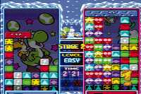

|

Review

Game Type: Puzzle
Definitely not a Tetris game. Sure, if the screen fills you
lose, but that's where the similarity ends. You move a cursor that
highlights two blocks at a time freely around the screen. Hit the button
to make the two highlighted blocks swap places. Line up three of the same
color vertically or horizontally to make them disappear. Several play
modes are available for one or two players.
Gameplay: 95/100
Budding game developers will be studying this game for years to come.
It is simply as close to perfection as gameplay design gets. The basic
concept alone is great. It's one of the few puzzle games that lets you
manipulate blocks that are already on the screen. Once a piece is placed
you're not stuck with it; you can go back and correct your mistakes.
But there are other puzzle games with a great basic concept
collecting dust on peoples' shelves. That's why the designers went on
to add all the little nuances that make a truly great game.
The whole game is designed to let players build really long chain
reactions to drop garbage blocks on your opponent. You can line up the
second match in a chain even while the first is being cleared from the
screen. Garbage blocks can form chains when they turn into normal blocks.
You can also hit your opponent by getting two matches with one swap. A
skilled player can fill his opponent's screen in a matter of seconds.
The forgiving chain system allows for incredible stunts, which is the
main reason this game is so addictive.
Graphics: 80/100
There are no eye-popping special effects (it's a puzzle game, fer
cryin' out loud!) but the colorful look is great if you don't mind the
cutesy atmosphere. Hey, it'll get your girlfriend to play. You choose
any of eight characters (twelve with a code), each with their own
backgrounds. (I was peeved to learn that Yoshi and his goons were only
used for the American version, and that the Japanese one had anime
chicks.)
Sound: 80/100
Each character has his own music and sound effects. Some tunes are
great, others poor. Again, not bad if you don't mind cute.
Overall: 95/100
Bow and worship this game. If it weren't for the cute look it
would probably be my favorite game of all time. (In fact it might be
anyway, but I need another year of playing it to make a big decision like that.)
In a perfect world it would be available on every platform, but for now
it's exclusive to SNES and Gameboy. I don't think I've ever played
anything this addictive. Rent this game and have some friends
over and I guarantee each of you will go out an purchase his own copy
the next day. I cannot recommend strongly enough that you check this
game out!
Codes
- High Speed Mode
- When the "Nintendo!" voice sample plays before the title screen,
quickly press B, A, L, L. With this code the blocks will not stop
rising when you get a chain or combo.
- Play as Bosses
- At the 2 player mode character select screen, press L and R
simultaneously on both controllers.
- Higher Difficulty in 1P Mode
- When starting a new game in 1P Vs. mode, highlight Hard on the
difficulty select screen, hold U, R, and L, and press A.
- Move Camera in Map View
- While on the 1P Vs. mode map screen, hold Select and you will be able
to move the camera around with the directional control.
- Early Character Select in 1P Mode (From chelly)
- After winning a match in 1P Vs. mode, hold X and Y until the map
screen appears. You will be able to select any of the characters you've
freed before you ever encounter the bosses.
- Control Example Mode (From chelly)
- Hold L and R while an example is running and you will be able to
control the cursor.
|